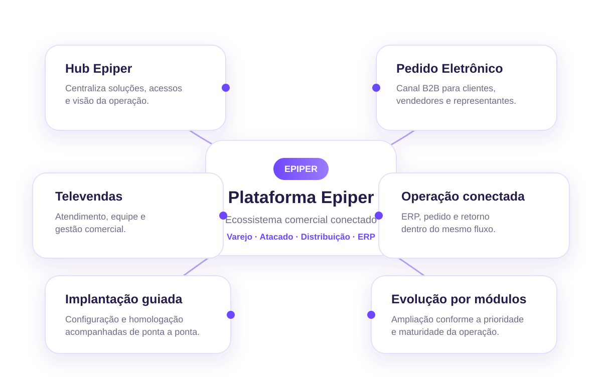

Hub Epiper
Centralize produtos, soluções, serviços e integrações em um mesmo ecossistema.
Conhecer o Hub →A Epiper reúne Televendas, Pedido Eletrônico, integração com ERP e gestão centralizada em um ecossistema pensado para varejo, atacado e distribuição.
Evolui por módulos, sem trocar o ERP.
Cada parte da Plataforma Epiper possui um papel específico e pode ser combinada conforme a necessidade da operação.
Centralize produtos, soluções, serviços e integrações em um mesmo ecossistema.
Conhecer o Hub →Entenda como dados, canais de venda, pedidos e retorno trabalham no mesmo fluxo.
Ver o fluxo →Mapeamento, configuração e homologação acompanhados conforme o ambiente da empresa.
Ver implantação →Adicione recursos conforme a maturidade e as prioridades da operação comercial.
Ver evolução →A Epiper separa responsabilidades para que cada parte da operação tenha um papel definido: o ERP mantém a base e as regras, os produtos cuidam da experiência de venda e o Hub organiza o acesso ao ecossistema.
Pedido Eletrônico e Televendas atendem jornadas diferentes sobre o mesmo núcleo.
Experiência comercialClientes, produtos, preço, estoque e condições podem abastecer os canais conforme o escopo da integração.
Base operacionalAPIs, banco, arquivos ou conectores são avaliados conforme o ambiente técnico disponível.
IntegraçãoO Hub aproxima módulos, acessos, indicadores e recursos para reduzir dispersão na rotina.
GovernançaO desenho ajuda a entender onde cada componente entra na operação e evita a sensação de “mais um sistema” desconectado.

Funcionalidade, integração e processo precisam caminhar juntos. Estes são os pontos que mais influenciam a qualidade do projeto e a adoção da equipe.
A Epiper atua como uma camada comercial conectada. Regras, automações e disponibilidade de dados dependem do desenho de integração definido para cada empresa.
A plataforma foi desenhada para trabalhar sobre a estrutura existente. O WinThor TOTVS é uma integração de destaque, mas outros ERPs podem ser avaliados por API, banco, arquivos ou conectores.
Conte como sua empresa vende hoje e qual ERP utiliza. A partir daí, podemos indicar um caminho inicial de implantação.